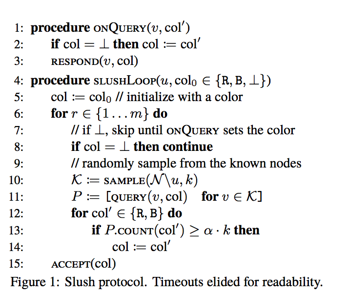
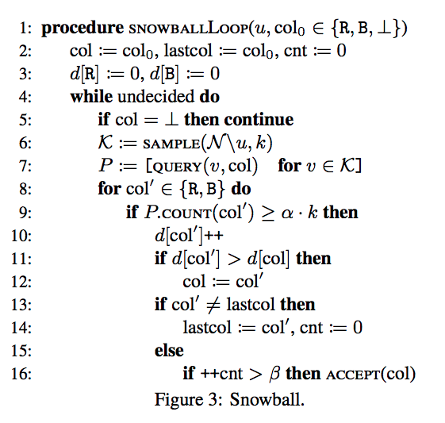
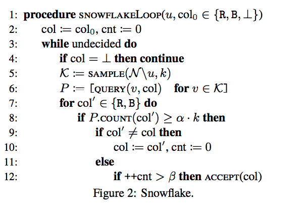
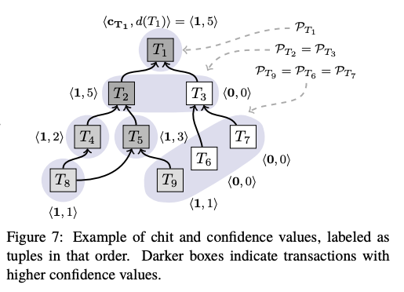

This paper is introduced a new family of consensus protocols called Avalanche. Avalanche protocol is the family of 4 Protocols for blockchain consensus. The protocol created by a pseudonymous team known as "Rocket". The consensus is very important to be achieved when many distributed computers share the same task and resources. The consensus algorithms are a way of assurance that the parties involved will reach agreement on the state of the ledger.
Avalanche is a leaderless byzantine fault tolerance which built on metastability mechanism and network random sampling. Metastability means that the protocol will never be in balanced. The protocol has to choose either 0 or 1 as an example. As the paper stated, " Avalanche’s metastable protocol is designed to tip a network towards one of the choices in a scenario".
In the consensus world, there are well-known types of consensus family.
Much like other open, permissionless distributed ledger, Avalanche enables a network of decentralized nodes to agree upon the order, validity, and acceptance of transactions. Avalanche provides a strong probabilistic safety guarantee in the presence of Byzantine adversaries and provides concurrency for many transactions at the same time which leads Avalanche to have high throughput and more scalable. It's a green protocol comparing to bitcoin. The Avalanche Communication overhead is O(kn log n) to O(kn) instead of O(n2) in the traditional consensus protocol.
Avalanche only guarantee the liveness for virtuous transactions and another stall in the network. That is, it takes around 2 seconds to achieve finality across the globe. This basically means that after 2 seconds, you can get your payment processed and verified. Higher throughput: 1000–10,000 transactions per second. The network does not need to agree on who the participants are to achieve undeniable consensus. Most importantly, the protocol is green. That means that it is sustainable, it does not waste any energy, and that there is no special ecosystem of miners with their own separate interests from the users.
The approach started off with slush non-Byzantine protocol, then snowflake, snowball, and an avalanche. Avalanche has three inspirations of previous work. First, it takes a safety guarantee that is probabilistic form bitcoin. Second, parallel consensus model with authenticated clients. Each client interacts independently with its own single replicated state machine. The system establishes partial order between dependent transactions. Finally, there is no liveness guarantee for misbehavior client.
Avalanche approach is using the UTXO model (unspent transaction outputs). The goal of our family of consensus protocols, then, is to accept a set of non-conflicting transactions in the presence of Byzantine behavior. Each client can be considered as a replicated state machine whose transitions are defined by a totally ordered list of accepted transaction. Avalanche properties are safety where no two correct nodes will accept conflicting transactions. liveness where any transaction issued by a correct client (aka virtuous transaction) will eventually be accepted by every correct node.
First, in Slush, a node starts out initially in an uncolored state. Upon receiving a transaction, an uncolored node updates its own color to the one carried in the transaction and initiates a query. Second, to perform a query, a node picks a small, constant sized (k) sample of the network uniformly at random, and sends a query message. Upon receiving a query, an uncolored node adopts the color in the query, responds with that color, and initiates its own query; whereas a colored node simply responds with its current color. If k responses are not received within a time-bound, the node picks an additional sample from the remaining nodes uniformly at random and queries them until it collects all responses. Third, once the querying node collects k responses, it checks if a fraction ≥ αk is for the same color, where α > 0.5 is a protocol's parameter. If the αk threshold is met and the sampled color differs from the node’s own color, the node flips to that color. It then goes back to the query step, and initiates a subsequent round of query, for a total of m rounds. Finally, the node decides the color it ended up with at time m. One of slush protocol properties is that it's memoryless. Also, the samples nodes in the queries are small. if m choose high, it ensures that all nodes will be colored identically whp. Each node has a constant, predictable communication overhead per round, and we will show that m grows logarithmically with n. 
Snowflake is a BFT. Snowflake augments Slush with a single counter that captures the strength of a node’s conviction in its current color This per-node counter stores how many consecutive samples of the network have all yielded the same color.
First, each node maintains a counter cnt;
Second, upon every color change, the node resets cnt to 0;
Third, upon every successful query that yields ≥ αk responses for the same color as the node, the node increments cnt.
Snowflake is a beautifully short part of the whitepaper and adds one basic feature to Slush, enabling it to become BFT.

Snowball is adding Confidence to the protocol.
Snowball augments Snowflake with confidence counters that capture the number of queries that have yielded a threshold result for their corresponding color.
1. Upon every successful query, the node increments its confidence counter for that color.
2. A node switches colors when the confidence in its current color becomes lower than the confidence value of the new color.

Avalanche, the last protocol, generalizes Snowball and maintains a dynamic append-only Directed Acyclic Graph (DAG) of all known transactions. The DAG has a single sink that is the genesis vertex. Maintaining a DAG provides two significant benefits. First, it improves efficiency, because a single vote on a DAG vertex implicitly votes for all transactions on the path to the genesis vertex. Second, it also improves security, because the DAG intertwines the fate of transactions, similar to the Bitcoin blockchain. With DAG there will be no mining groups. DAG doesn't need to link large blocks one after another in a long chain. Rather, it is going to build a graph of transactions. Each transaction will refer to two older transactions. As a result, DAG is able to confirm transactions quickly after transaction received and there is no need to wait for the next block to validate the transaction. DAGs, on the other hand, allows for multiple chains of blocks to co-exist and interconnect. Nodes can exist in parallel, as long as the information is directed in the same way. The advantage of this is it allows transactions to be confirmed quicker (no wait to be pooled into a block of all transactions for that period as per Bitcoin or Ethereum) – they are confirmed as they are processed by newer transactions. The parent-child relationships encoded in the DAG may, but do not need to, correspond to application-specific dependencies. We use the term ancestor set to refer to all transactions reachable via parent edges back in history, and progeny to refer to all children transactions and their offspring. In cryptocurrency application, the transactions that spend the same funds (double-spends) conflict, and form a conflict set, out of which only a single one can be accepted. Note that the conflict set of a virtuous transaction is always a singleton.

This still leaves us with the problem of how to actually choose between conflicting transactions or double spends. Avalanche’snche builds upon Snowball here, including not just confidence counters but also ‘chits’. A chit is collected by a transaction when a predefined threshold of nodes vote to affirm that a transaction and all of its parent transactions are the preferred option. The number of chits is then used by nodes to come to a confidence in not just the specific transaction but the parents and the descendants (i.e. newer transactions emerging). If there is a tie then nodes vote for the first seen.